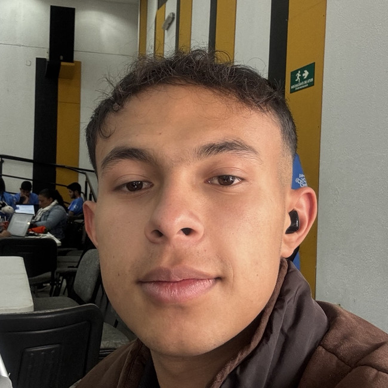
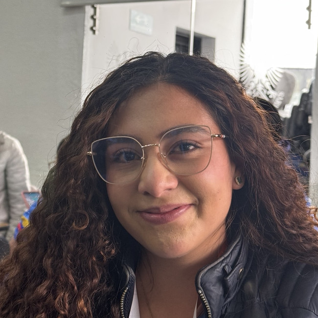

El equipo detrás de FLARE
Somos un equipo colombiano de Ingeniería de Sistemas participando en el NASA Space Apps Challenge 2026, en el reto "Harmonization of MODIS and VIIRS Hot Spots".

Procesó los registros de la NASA y validó el método.
Construyó el mapa, el calendario y la alerta.

Diseñó la identidad visual y probó la página con usuarios.

Investigó el contexto de incendios y preparó el pitch.
El reto
Lo que nos pidió la NASA
La NASA tiene dos fuentes de focos de fuego: MODIS (desde 2000) y VIIRS (desde 2012). VIIRS ve fuegos mucho más pequeños, así que si se juntan sin más, parece que el fuego aumentó de golpe. El reto es armonizar los dos registros en un solo calendario comparable y mostrarlo en una aplicación fácil de usar.
¿Para quién es?
Quién puede usar FLARE
- Alcaldías y gobernaciones: saber cuándo empieza la temporada de quemas en su municipio.
- Bomberos y gestión del riesgo: preparar equipos antes de los meses críticos.
- Corporaciones ambientales: ver si el fuego sube o baja con datos comparables de 25 años.
- Cualquier persona: buscar su municipio y entender qué está pasando.
Nuestro método en 4 pasos
Cómo convertimos dos satélites distintos en un solo registro comparable
Créditos y datos
Fuentes y herramientas que usamos
- Focos de fuego: NASA FIRMS — MODIS Collection 6.1 (Terra y Aqua), VIIRS S-NPP 375 m y VIIRS NOAA-20 375 m.
- Límites de municipios y departamentos: geoBoundaries (William & Mary geoLab).
- Mapas base: Esri. Librerías: Leaflet, Leaflet.heat y Apache ECharts.
Código abierto
Todo el proyecto está publicado
El código de la página, los scripts de Python y los datos procesados están en GitHub, para que cualquiera pueda revisar el método o reutilizarlo en otro país.
Ver el código en GitHub ↗